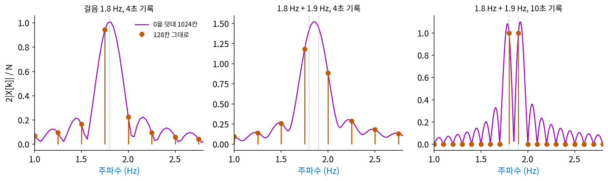
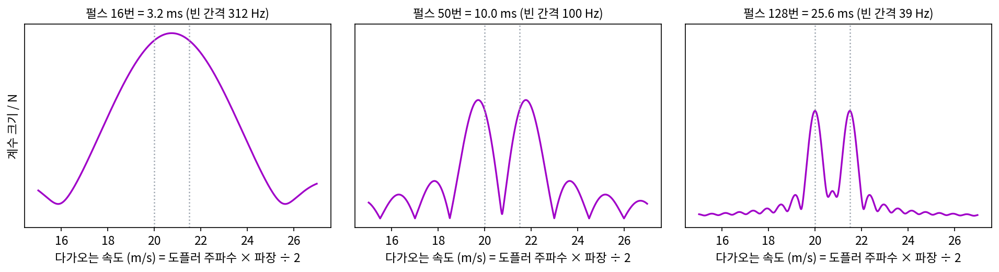
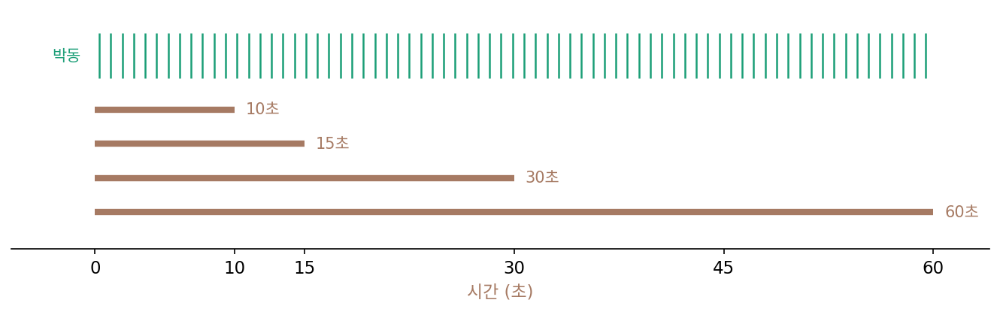
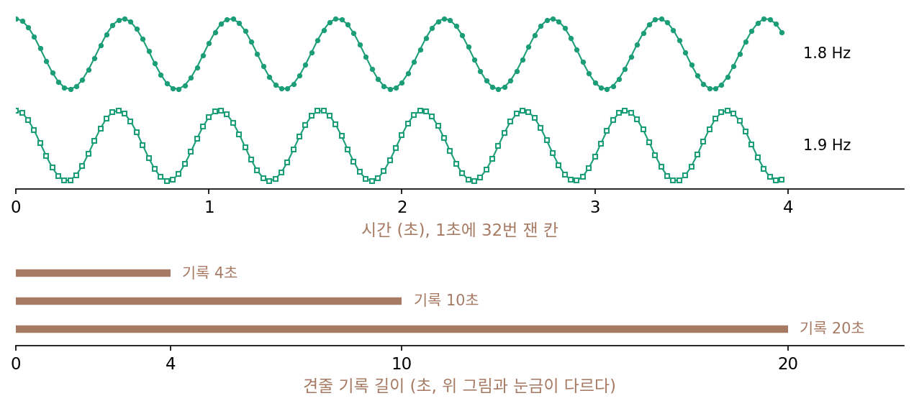
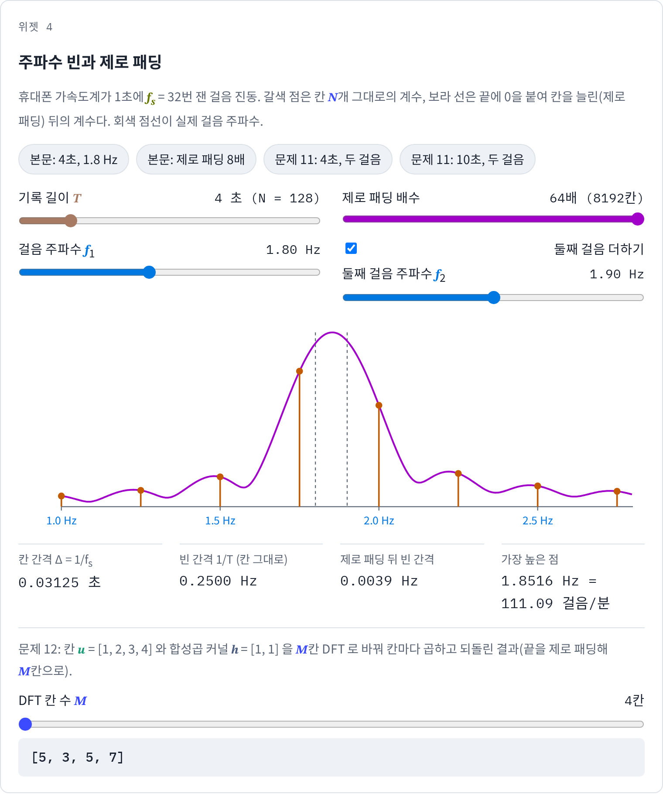
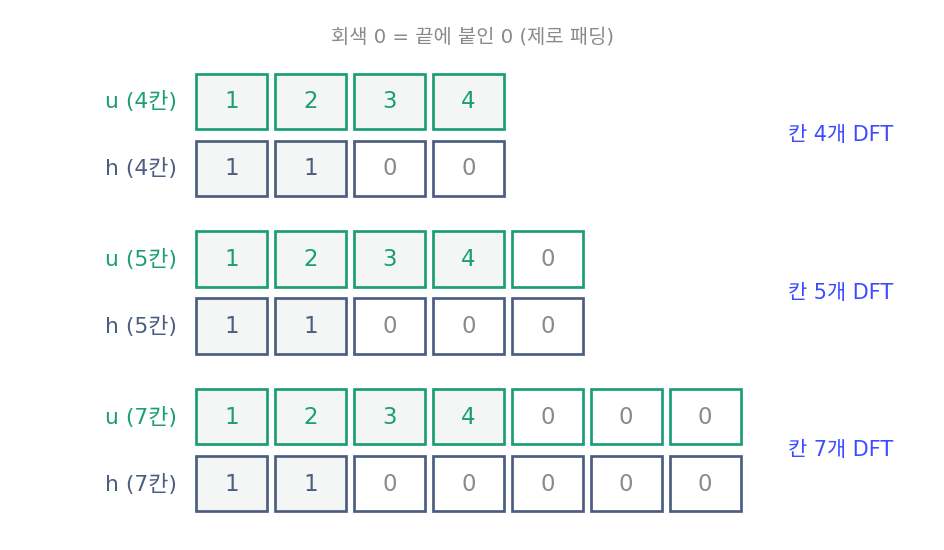

주파수 빈: 기록 길이가 주파수를 가르는 세밀함을 정한다
기온 여덟 칸에서는 주파수 번호 k가 「하루에 몇 번」이라 읽기 쉬웠지만, 실제 기록은 초 단위다. 휴대폰 만보기 앱은 가속도계가 1초에 수십 번 잰 가속도에서 1초에 몇 걸음을 딛는지(걸음 주파수)를 읽는다. 1초에 32번, 4초 동안 재면 칸이 128개다. 이때 계수 번호 k = 7은 몇 Hz의 물결이고, 걸음이 1.8 Hz(1분에 108걸음)면 어느 번호에 나타날까? 번호 사이에 떨어지면 칸 끝에 0을 붙여 칸 수를 늘려서 더 잘게 읽어 낼 수 있을까?
4초 동안의 걸음
칸 사이 시간 간격을 Δ = 1/32초라 하자. 칸 N = 128개는 T = NΔ = 4초 동안의 기록이다. 주파수 번호 k는 「기록 전체 동안 물결이 몇 번 되풀이되나」였으니, 1초에는 k/4번, 다시 말해 k/4 Hz다. 이웃한 번호 사이가 0.25 Hz다.
1분에 108걸음, 1.8 Hz로 걸을 때의 가속도 변화를 코사인 물결로 두고 계수를 구하면, 크기가 가장 큰 번호는 k = 7(1.75 Hz)이고 2|X|/N은 0.944다. 옆의 k = 8(2.0 Hz)에도 0.226이 나온다. 1.8 Hz는 1.75와 2.0 사이라 어느 번호에도 딱 들어맞지 않고, 둘에 나뉘어 묻어난다. 앱이 가장 큰 번호를 그대로 읽으면 1분에 105걸음이라 3걸음 모자라게 센다.
이번에는 128칸 끝에 0을 896개 붙여 1024칸으로 만들어 변환한다. 이렇게 신호 끝에 0을 붙여 칸 수를 늘리는 일을 제로 패딩 (끝에 0 붙이기 / zero padding)이라 한다. 번호 사이가 32/1024 = 0.03125 Hz로 여덟 배 잘게 나뉘고, 가장 큰 번호가 1.8125 Hz, 1분에 108.75걸음이다. 64배(8192칸)로 제로 패딩하면 1.80078 Hz, 108.05걸음이다. 제로 패딩한 1024칸의 계수 가운데 여덟 번째마다 하나씩 뽑으면 128칸의 계수와 똑같다. 제로 패딩은 새 정보를 보태지 않고, 128칸이 이미 정한 매끈한 곡선 위에서 점을 더 촘촘히 찍어 보는 일이다.
이렇게 주파수 번호 하나가 맡는 주파수 폭을 주파수 빈 (번호 하나가 맡는 주파수 칸 / frequency bin)이라 하고, 이웃한 빈 사이의 간격 1/T를 빈 간격(bin spacing)이라 한다. 번호 k의 주파수와 함께 적으면 아래와 같다.
빈 간격은 칸 간격이 아니라 기록 길이가 정하므로, 1초에 1000번씩 재도 4초만 재면 빈 간격은 0.25 Hz다. 제로 패딩하면 번호가 촘촘해져 봉우리 자리를 더 잘 읽을 수 있지만, 봉우리의 폭은 여전히 1/T 쯤이다. 가장 높은 번호 N/2는 fs/2 = 16 Hz이고, 그 위의 번호는 켤레 대칭 때문에 음의 주파수다.

레이더의 도플러: 펄스를 몇 번 쏘아야 두 속도가 갈리나
구급차가 다가올 때는 사이렌이 높게 들리다가 지나가고 나면 낮아진다. 다가오는 물체에 부딪혀 되돌아온 전파도 이렇게 주파수가 바뀌고, 레이더 스피드건과 군의 감시 레이더는 바뀐 양으로 물체의 속도를 잰다. 전파가 갔다가 돌아오므로 바뀐 양은 「2 × 다가오는 속력 ÷ 전파의 파장」이고, 바뀐 주파수의 양을 도플러 주파수라 한다. 같은 거리에서 두 차량이 조금 다른 속력으로 다가오면 레이더는 두 대를 볼까, 한 대를 볼까? 두 걸음을 가르던 물음과 같은 물음이다.
파장 3 cm(약 10 GHz) 전파로 20 m/s와 21.5 m/s로 다가오는 두 차량을 본다고 하자. 도플러 주파수는 2 × 20 / 0.03 = 1333.3 Hz와 2 × 21.5 / 0.03 = 1433.3 Hz로, 100 Hz 차이다. 펄스 도플러 레이더는 전파를 짧은 펄스로 끊어 쏘고, 같은 거리에서 돌아온 메아리를 펄스마다 하나씩 모은다. 1초에 5000번 쏜다면 펄스와 펄스 사이에 두 메아리의 위상이 96.0°와 103.2°씩 돌아가므로, 모은 값은 1초에 5000번 잰 1333.3 Hz와 1433.3 Hz 물결의 합이다. 레이더는 펄스마다 모은 값을 이산 푸리에 변환해서 봉우리 자리로 속도를 읽는다. 모은 펄스가 N개면 빈 간격은 5000/N Hz이고, 기록 길이 T = N/5000초의 역수 1/T와 같다.
펄스 16번(3.2 ms)이면 빈 간격이 312.5 Hz, 속도로 바꾸면 0.03 ÷ (2 × 0.0032) = 4.69 m/s다. 8192칸으로 제로 패딩해도 봉우리는 20.75 m/s에 하나뿐이어서, 레이더는 두 차량을 한 대로 본다. 펄스 50번(10 ms)이면 빈 간격이 100 Hz(1.5 m/s)가 되어 19.72 m/s와 21.77 m/s에 봉우리가 둘 서고, 128번(25.6 ms)이면 20.0 m/s와 21.5 m/s로 실제 속도에 맞는다. 1.8 Hz와 1.9 Hz 걸음을 가르는 데 10초가 필요했던 것과 같은 계산이다. 두 도플러 주파수를 가르려면 기록 길이가 차이의 역수, 1/100 Hz = 10 ms쯤 돼야 한다.

펄스를 오래 모을수록 속도를 잘게 가르지만 공짜는 아니다. 모으는 동안 두 차량이 속력을 바꾸지 않아야 봉우리가 한 자리에 선다. 「기록 내내 같은 물결이 되풀이된다」는 이산 푸리에 변환의 전제를 레이더도 그대로 진다. 한 방향에 오래 머물수록 다른 방향을 살필 시간도 줄어든다.
ML에서: 긴 합성곱을 고속 푸리에 변환으로 계산할 때의 제로 패딩
글 길이만큼 긴 합성곱 커널을 쓰는 언어 모델이 있다. 폴리(Michael Poli)와 동료들의 Hyena(2023)는 어텐션 대신 길이 L인 입력에 길이 L인 합성곱 커널을 걸고, 이 합성곱을 고속 푸리에 변환으로 계산한다. 두 신호를 각각 이산 푸리에 변환해 주파수마다 곱하고 되돌리면 합성곱이 나온다는 성질을 쓰는 것인데, 왜 그렇게 되는지는 평행이동 대칭을 다루며 따진다. 이렇게 하면 칸마다 곱해 더하는 L²번 대신 L log L에 비례하는 계산으로 끝난다. 논문은 Hyena 가 잘 최적화한 어텐션보다 길이 8천에서 두 배, 6만 4천에서 100배 빠르다고 보고했다. 그런데 논문은 고속 푸리에 변환에 넣기 전에 입력과 합성곱 커널 끝을 제로 패딩해 길이를 2L − 1로 맞춘다고 적었는데, 빈 간격을 잘게 하려는 것은 아니다. 무엇 때문인지는 아래 문제 12에서 본다.
문제 10. 맥박을 15초만 세면
1분에 73번 뛰는 맥박을 잰다. (가) 15초 동안 센 수에 4를 곱하는 방법으로 얻을 수 있는 값은 무엇인가? 10초, 30초, 60초 동안 세면? (나) 이 방법의 눈금(얻을 수 있는 값 사이의 간격, 본문의 빈 간격에 해당)은 세는 시간과 어떤 관계인가? (다) 15초 세고 나서 「나머지 45초 동안은 0번 뛰었다」고 치고 60초 동안 센 것처럼 계산하면 눈금이 1이 되는가?


(가)는 15초면 18.25번 뛰니까 18이나 19를 세서 72나 76이에요. 10초면 72나 78, 30초면 72나 74, 60초면 73이요.

(나)는 15초에 4, 10초에 6, 30초에 2, 60초에 1이니까 눈금이 60/T야. 오래 셀수록 잘게 갈라져.

(다)는요?

60초 동안 센 걸로 치면 눈금은 1이 되는데… 센 수는 18이니까 맥박이 18이 돼 버려요. 이건 아니죠.

그래서 제로 패딩으로 늘린 계산은 패딩하기 전의 진폭을 맞추려고 원래 칸 수로 나눠요. 그렇게 해도 늘어나는 것이 있을까요?

새로 센 박동은 하나도 없어요. 15초 동안의 정보로 할 수 있는 건 그대로고, 계산이 그 사이 값을 매끈하게 이어 줄 뿐이에요. 걸음 봉우리 자리를 1.8 Hz 근처로 더 잘 읽어 낸 건 물결이 하나뿐이라 봉우리 꼭대기를 찾기만 하면 됐기 때문이고요.

제로 패딩은 저화질 사진을 확대해서 칸을 촘촘하게 다시 그리는 일이네요. 그래도 멀리서 찍은 간판 글씨가 새로 읽히지는 않잖아요.
문제 11. 두 사람이 함께 걸으면
두 사람이 나란히 걷는데 한 사람은 1.8 Hz, 다른 사람은 1.9 Hz 로 걷고, 가속도계(1초에 32번)에는 두 사람의 걸음 진동이 같은 크기로 더해져 잡힌다. (가) 4초 기록을 8192칸으로 제로 패딩해 변환하면 봉우리가 몇 개 보이는가? (나) 10초, 20초 기록이면? (다) 두 걸음을 가르려면 얼마나 오래 재야 하는가? (위젯 4의 「문제 11」 단추로 확인해 보자.)

64배나 제로 패딩하면 빈 간격이 0.004 Hz쯤이니까, 0.1 Hz 떨어진 두 봉우리는 넉넉히 갈라지겠죠. 두 개요.
위젯에서 4초로 해 봐요.

봉우리가 1.8516 Hz에 하나뿐이에요. 1.8과 1.9 사이에 뭉뚝한 봉우리 하나요. 칸을 아무리 늘려도 안 갈라져요.
봉우리 하나의 폭이 1/T 쯤이랬잖아. 4초면 폭이 0.25 Hz라 0.1 Hz 떨어진 두 봉우리가 한 덩어리로 겹쳐. 10초면 폭이 0.1 Hz라 1.7812와 1.918에 두 봉우리가 서고, 20초면 1.793과 1.9062로 실제 걸음 주파수 1.8, 1.9 Hz에 더 가까워져.

그래요. 두 주파수를 가르려면 기록 길이가 차이의 역수, 1/0.1 = 10초쯤은 돼야 해요. 제로 패딩은 봉우리 하나의 자리를 잘 읽게 할 뿐, 겹친 봉우리를 떼어 주지는 못해요.

레이더도 똑같네요. 1.5 m/s 차이로 다가오는 두 차는 도플러 주파수가 100 Hz 차이니까, 펄스를 10 ms 넘게 모아야 두 대로 보여요. 1초에 5000번 쏘면 50번이요.
두 사람의 걸음은 0.1 Hz 차이라 10초, 레이더는 100 Hz 차이라 10 ms. 차이가 천 배 크니까 재는 시간은 천 분의 일이면 돼.

두 물결의 차이만큼 느린 맥놀이가 한 번은 다 지나가야 둘이 다르다는 걸 알 수 있는 거네. 0.1 Hz 맥놀이 한 번이 10초야.

문제 12. 고속 푸리에 변환으로 합성곱 하기
칸 u = [1, 2, 3, 4] 와 합성곱 커널 h = [1, 1] 의 합성곱을 구한다. (가) 칸마다 곱해 더하는 방법(h 를 한 칸씩 밀며 겹친 곳을 곱해 더하기)으로 구하라. 결과는 몇 칸인가? (나) u 와 h(끝에 0을 둘 붙여 4칸으로)를 각각 칸 4개의 이산 푸리에 변환으로 바꿔 주파수마다 곱한 뒤 되돌리면 무엇이 나오는가? (다) 칸 5개, 7개로 제로 패딩하면? Hyena 는 길이 L 인 입력과 합성곱 커널을 왜 2L − 1 칸으로 제로 패딩하는가? (위젯 4 아래쪽의 칸 수 슬라이더로 확인해 보자.)

(가)는 [1, 1 + 2, 2 + 3, 3 + 4, 4] = [1, 3, 5, 7, 4]로 다섯 칸이에요. (나)는 numpy 로 해 보니 [5, 3, 5, 7]이 나와요. 첫 칸이 1이 아니라 5네요. 계산을 틀렸나 봐요.
틀리지 않았어요. 5는 어디서 왔을까요? (가)의 결과와 비교해 봐요.
1 + 4요. 다섯째 칸 4가 칸 4개 안에 들어갈 자리가 없어서 맨 앞으로 넘어가 첫 칸에 더해졌어요.
이산 푸리에 변환은 칸 N개가 한 바퀴로 이어진 것처럼 다뤘잖아. 칸 번호 4가 칸 번호 0과 같은 자리야. 그래서 넘친 부분이 처음으로 돌아와 겹쳐.
그럼 (다)처럼 칸을 늘리면요?
칸 5개면 [1, 3, 5, 7, 4]로 맞고, 7개면 [1, 3, 5, 7, 4, 0, 0]이에요. 넘칠 자리가 생겼네요.

길이 L인 입력과 길이 L인 합성곱 커널이면 결과는 몇 칸이에요?

한 칸씩 밀어 보면, 처음 겹칠 때부터 다 빠져나갈 때까지… L + L − 1 = 2L − 1칸이에요.
Hyena 가 딱 그만큼 제로 패딩하는 건 왜일까요?
그만큼 있어야 넘친 부분이 돌아와 겹칠 자리가 없으니까요. 빈 간격을 잘게 하려는 게 아니라, 한 바퀴로 이어 붙인 칸에서 끝이 처음과 겹치지 않게 하려는 거였네요.

그럼 칸 수를 2의 거듭제곱으로 맞추고 싶을 땐 어떡해?
2L − 1보다 큰 2의 거듭제곱까지 제로 패딩하면 돼. 8칸으로 해도 [1, 3, 5, 7, 4, 0, 0, 0]이었어.
칸 4개를 한 바퀴로 잇는 건, 자리가 네 개뿐인 원형 식탁에 다섯 명이 앉아 마지막 사람이 첫 사람 자리에 끼어 앉는 것과 비슷하네요. 의자를 2L − 1개만큼 넉넉히 놓아야 해요.